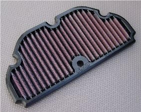
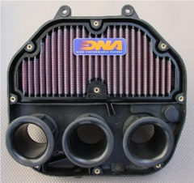
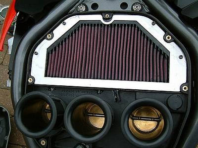

My personal view, for my type of riding, is that the original oil filled air filter works fine, but for those who want to extend their maintenance period, DNA make an alternative filter.
Thanks must go to mileclocker -
benelliforum 22 Mch 07 - for making this happen ....
"If anyone is looking for an aftermarket airfilter for their TNT, there is still hope.
Neither K&N nor BMC makes one, but I contacted DNA and asked them how I could persuade them to make one for
the TNT. They just asked me to send them the airfilter and airfilter box so they can make a mould. I sent it
to them this morning as my '04 TNt is at the workshop anyway and am awaiting their news. They said they would
need it for about a week and then again 3 weeks down the line for a couple of days to test the production
sample. So I guess it should be in production in about a month."
|  |  | Available in Australia from Serco Pty. Ltd. 34 Veronica Street Capalaba Queensland 4157 Tel: 0061-7-3823 3833 Fax: 0061-7-3823 3611 Email: sales@serco.com.au www.serco.com.au |

vxtbrit - benelliforum - did it first though, on his TNT
The OEM foam air filter deteriorates over time and eventually crumbles to dust. I sent Unifilter a drawing and
stepped it's circumference out a further millimeter to make it seal better than the original. I used it in
Jane's RS.
It's better than the original.
The only advantage the DNA filter has over it is its increased surface area, but the Unifilter part is far cheaper,
more rugged and doesn't need special cleaning fluid or special filter oil.
When my DNA filter needs replacement, it will be with the Unifilter part.
Unifilter gave it the part number CF0581.
It's not an online item though as there is little demand for them, but if you call (+612 4322 2007) or
email Uniflow they will make one for you. From memory they charged
me around AUD40.